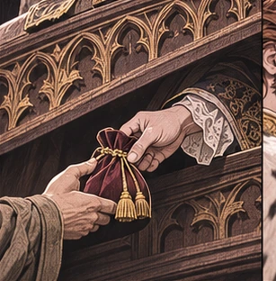
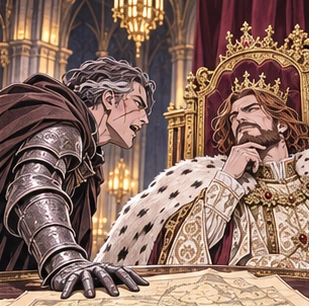
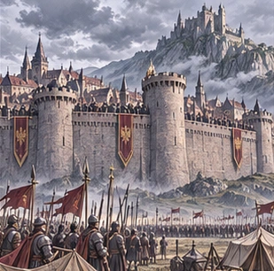
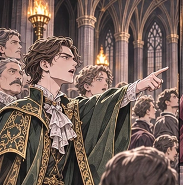
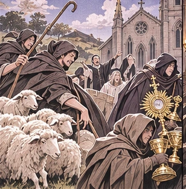
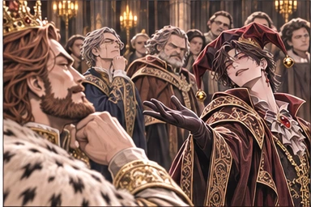

1-2막 · 황제의 궁정

KAISERLICHE PFALZ
SAAL DES THRONES
Staatsrat in Erwartung des Kaisers.
Trompeten.
황제의 궁정. 알현실. 국정을 의논하는 대신들이 황제를 기다린다. 나팔 소리.

Hofgesinde aller Art, prächtig gekleidet, tritt vor.
Der Kaiser gelangt auf den Thron, zu seiner Rechten
der Astrolog.
온갖 궁정 사람들이 화려하게 차려입고 앞으로 나온다. 황제가 왕좌에 오르고, 오른편에는 점성술사가 자리한다.

KAISER.
Ich grüße die Getreuen, Lieben,
Versammelt aus der Näh und Weite.--
Den Weisen seh' ich mir zur Seite,
Allein wo ist der Narr geblieben?
황제. 가까운 곳과 먼 곳에서 모인 충직하고 사랑하는 이들에게 인사를 전한다. 내 곁에 현자는 보이는데, 광대는 어디로 갔느냐?

JUNKER.
Gleich hinter deiner Mantelschleppe
Stürzt' er zusammen auf der Treppe,
Man trug hinweg das Fettgewicht;
Tot oder trunken, weiß man nicht.
젊은 궁정 신하. 폐하의 망토 자락 바로 뒤에서 그가 계단에 쓰러졌습니다. 그 육중한 몸을 사람들이 들어 옮겼습니다. 죽었는지 술에 취했는지는 모릅니다.

ZWEITER JUNKER.
Sogleich mit wunderbarer Schnelle
Drängt sich ein andrer an die Stelle.
Gar köstlich ist er aufgeputzt,두 번째 젊은 궁정 신하. 곧바로 다른 자가 놀라울 정도로 빠르게 그 자리를 비집고 들어옵니다. 옷차림은 무척 화려하나 우스꽝스러워 다들 멈칫합니다.

Doch fratzenhaft, daß jeder stutzt.
Die Wache hält ihm an der Schwelle
Kreuzweis die Hellebarden vor--
Da ist er doch, der kühne Tor!
문턱에서 경비병들이 도끼창을 엇갈려 그를 막습니다. 그런데도 저기 있군요, 저 대담한 광대가!

MEPHISTOPHELES:
am Throne kniend.
Was ist verwünscht und stets willkommen?
Was ist ersehnt und stets verjagt?메피스토가 왕좌 앞에 무릎을 꿇는다. 저주받으면서도 늘 환영받는 것은 무엇입니까? 기다려지면서도 늘 쫓겨나는 것은 무엇입니까?

Was immerfort in Schutz genommen?
Was hart gescholten und verklagt?
Wen darfst du nicht herbeiberufen?
Wen höret jeder gern genannt?
Was naht sich deines Thrones Stufen?
Was hat sich selbst hinweggebannt?늘 두둔받는 것은 무엇입니까? 심하게 꾸짖고 고발하는 것은 무엇입니까? 직접 불러들여서는 안 되는 이는 누구입니까? 누구나 그 이름을 듣기 좋아하는 이는 누구입니까? 왕좌의 계단에 다가온 것은 무엇입니까? 스스로 자취를 감춘 것은 무엇입니까?

KAISER:
Für diesmal spare deine Worte!
Hier sind die Rätsel nicht am Orte,
Das ist die Sache dieser Herrn.--
Da löse du! das hört' ich gern.
Mein alter Narr ging, fürcht' ich, weit ins Weite;
Nimm seinen Platz und komm an meine Seite.황제. 이번엔 말 좀 아껴라! 여기서 수수께끼를 낼 때가 아니다. 그건 이분들이 다룰 일이니, 네가 한번 풀어 봐라! 그 답은 듣고 싶구나. 예전 광대는 아무래도 멀리 떠난 듯하다. 네가 그 자리를 맡고 내 곁으로 와라.
GEMURMEL DER MENGE:
Ein neuer Narr--Zu neuer Pein--
Wo kommt er her?--Wie kam er ein?--
Der alte fiel--Der hat vertan--
Es war ein Faß--Nun ist's ein Span--사람들이 웅성거린다. 새 광대라니, 새 골칫거리가 되겠군. 어디서 온 거지? 어떻게 들어왔어? 옛 광대는 쓰러졌고, 이제 끝장이군. 전에는 술통이더니 이번에는 나뭇조각이네.

KAISER:
Und also, ihr Getreuen, Lieben,
Willkommen aus der Näh' und Ferne!
Ihr sammelt euch mit günstigem Sterne,
Da droben ist uns Glück und Heil geschrieben.
Doch sagt, warum in diesen Tagen,
Wo wir der Sorgen uns entschlagen,
Schönbärte mummenschänzlich tragen
Und Heitres nur genießen wollten,
Warum wir uns ratschlagend quälen sollten?
Doch weil ihr meint, es ging' nicht anders an,
Geschehen ist's, so sei's getan.황제. 가까이서도 멀리서도 온 충직하고 사랑하는 이들을 환영한다. 길한 별 아래 모였으니 하늘에는 행운과 복이 적혀 있다. 그런데 근심을 내려놓고 우스꽝스러운 가면을 쓰고 즐기려던 이때, 어째서 머리를 싸매고 의논해야 하는가? 달리 도리가 없다고들 하니, 기왕 모인 김에 해 보자.

KANZLER:
Die höchste Tugend, wie ein Heiligenschein,
Umgibt des Kaisers Haupt; nur er allein
Vermag sie gültig auszuüben:
Gerechtigkeit!--Was alle Menschen lieben,
Was alle fordern, wünschen, schwer entbehren,
Es liegt an ihm, dem Volk es zu gewähren.
Doch ach! Was hilft dem Menschengeist Verstand,
Dem Herzen Güte, Willigkeit der Hand,
Wenn's fieberhaft durchaus im Staate wütet
Und übel sich in übeln überbrütet?재상. 가장 높은 덕목이 성스러운 빛처럼 황제의 머리 위를 감쌉니다. 오직 황제만이 그것을 제대로 펼칠 수 있습니다. 바로 정의입니다. 모두가 사랑하고 요구하며 바라 마지않는 정의를 백성에게 내리는 일은 폐하에게 달려 있습니다. 그러나 나라 전체가 열병처럼 들끓고 잘못이 또 다른 잘못을 낳는다면, 지혜와 선한 마음과 기꺼이 일하려는 손이 무슨 소용이겠습니까?

Wer schaut hinab von diesem hohen Raum
Ins weite Reich, ihm scheint's ein schwerer Traum,
Wo Mißgestalt in Mißgestalten schaltet,
Das Ungesetz gesetzlich überwaltet
Und eine Welt des Irrtums sich entfaltet.
Der raubt sich Herden, der ein Weib,
Kelch, Kreuz und Leuchter vom Altare,
Berühmt sich dessen manche Jahre
Mit heiler Haut, mit unverletztem Leib.이 높은 곳에서 넓은 제국을 내려다보면 무거운 악몽과도 같습니다. 온갖 흉측한 일이 판을 치고, 무법이 법인 양 군림하며, 잘못된 세상이 펼쳐집니다. 누구는 가축 떼를, 누구는 여인을, 또 누구는 제단에서 성배와 십자가와 촛대를 빼앗습니다. 그러고도 다친 곳 하나 없이 몇 해씩 그 일을 자랑합니다.

Jetzt drängen Kläger sich zur Halle,
Der Richter prunkt auf hohem Pfühl,
Indessen wogt in grimmigem Schwalle
Des Aufruhrs wachsendes Gewühl.
Der darf auf Schand' und Frevel pochen,
Der auf Mitschuldigste sich stützt,
Und: Schuldig! hörst du ausgesprochen,
Wo Unschuld nur sich selber schützt.이제 억울함을 호소하는 이들이 법정에 몰려듭니다. 재판관은 높은 자리에 앉아 위세를 부리고, 그 사이 격렬한 소요는 점점 커집니다. 누구는 저지른 파렴치한 짓으로 큰소리치고, 누구는 함께 죄를 지은 자들에게 기대지요. 죄 없는 사람이 자신을 지키려는 것뿐인 자리에서 ‘유죄!’라는 소리가 들립니다.

So will sich alle Welt zerstückeln,
Vernichtigen, was sich gebührt;
Wie soll sich da der Sinn entwickeln,
Der einzig uns zum Rechten führt?
Zuletzt ein wohlgesinnter Mann
Neigt sich dem Schmeichler, dem Bestecher,
Ein Richter, der nicht strafen kann,
Gesellt sich endlich zum Verbrecher.그리하여 세상은 갈기갈기 찢어지고 지켜야 할 것은 무너집니다. 우리를 올바른 길로 이끌 분별이 어찌 자라겠습니까? 마침내 뜻이 선한 사람도 아첨꾼과 뇌물 주는 자에게 넘어가고, 죄에 벌을 줄 수 없는 재판관은 끝내 범죄자의 편이 됩니다.

Ich malte schwarz, doch dichtern Flor
Zög' ich dem Bilde lieber vor.
Entschlüsse sind nicht zu vermeiden;
Wenn alle schädigen, alle leiden,
Geht selbst die Majestät zu Raub.어둡게 그려 말씀드렸습니다만, 차라리 더 두꺼운 천으로 이 그림을 덮어 버리고 싶습니다. 이제 결단을 피할 수 없습니다. 모두가 서로에게 해를 끼쳐 모두가 고통받으면 황제의 권위조차 약탈당합니다.

HEERMEISTER:
Wie tobt's in diesen wilden Tagen!
Ein jeder schlägt und wird erschlagen,
Und fürs Kommando bleibt man taub.총사령관. 이 어지러운 나날에 얼마나 거칠게 날뛰는지요! 저마다 남을 치고 또 쓰러지며, 명령에는 귀를 닫습니다.

Der Bürger hinter seinen Mauern,
Der Ritter auf dem Felsennest
Verschwuren sich, uns auszudauern,
Und halten ihre Kräfte fest.시민은 성벽 뒤에, 기사는 바위 위 요새에 틀어박혔습니다. 우리보다 오래 버티겠다고 굳게 맹세하고 제 힘을 비축합니다.

Der Mietsoldat wird ungeduldig,
Mit Ungestüm verlangt er seinen Lohn,
Und wären wir ihm nichts mehr schuldig,
Er liefe ganz und gar davon.용병은 참을성을 잃고 거칠게 봉급을 요구합니다. 우리가 줄 돈이 남아 있지 않다면 벌써 아주 달아났을 것입니다.

Verbiete wer, was alle wollten,
Der hat ins Wespennest gestört;
Das Reich, das sie beschützen sollten,
Es liegt geplündert und verheert.
Man läßt ihr Toben wütend hausen,
Schon ist die halbe Welt vertan;
Es sind noch Könige da draußen,
Doch keiner denkt, es ging' ihn irgend an.
모두가 하고 싶어 하는 일을 누가 금하기라도 하면 벌집을 건드린 꼴입니다. 그들이 지켜야 할 제국은 약탈당하고 황폐해졌습니다. 그들이 마음껏 난동을 부리게 내버려 두니 벌써 세상의 절반이 망했습니다. 밖에는 아직 왕들이 있지만 누구도 자기 일이라고 생각하지 않습니다.

SCHATZMEISTER:
Wer wird auf Bundsgenossen pochen!
Subsidien, die man uns versprochen,
Wie Röhrenwasser bleiben aus.재무관. 누가 동맹국을 믿겠습니까! 약속한 지원금은 관에서 나와야 할 물처럼 끊겨 버렸습니다.

Auch, Herr, in deinen weiten Staaten
An wen ist der Besitz geraten?
Wohin man kommt, da hält ein Neuer Haus,
Und unabhängig will er leben,
Zusehen muß man, wie er's treibt;
Wir haben so viel Rechte hingegeben,
Daß uns auf nichts ein Recht mehr übrigbleibt.폐하의 드넓은 영토에서도 재산이 누구 손에 넘어갔습니까? 가는 곳마다 새 주인이 들어앉아 제멋대로 독립해 살려 합니다. 우리는 그들이 하는 짓을 지켜봐야만 합니다. 권리를 너무 많이 내주어 이제 우리에게는 아무 권리도 남지 않았습니다.

Auch auf Parteien, wie sie heißen,
Ist heutzutage kein Verlaß;
Sie mögen schelten oder preisen,
Gleichgültig wurden Lieb' und Haß.
Die Ghibellinen wie die Guelfen
Verbergen sich, um auszuruhn;
Wer jetzt will seinem Nachbar helfen?
Ein jeder hat für sich zu tun.오늘날에는 이름이 무엇이든 어느 파벌도 믿을 수 없습니다. 그들이 비난하든 칭찬하든, 미워하든 좋아하든 이제 다 소용없습니다. 기벨린파도 겔프파도 숨어 쉽니다. 지금 누가 이웃을 돕겠습니까? 저마다 제 일로 바쁩니다.

Die Goldespforten sind verrammelt,
Ein jeder kratzt und scharrt und sammelt,
Und unsre Kassen bleiben leer.
금고 문은 단단히 막혔습니다. 저마다 긁고 파서 자기 몫을 모으는데, 우리 금고는 비어 있습니다.

MARSCHALK:
Welch Unheil muß auch ich erfahren!
Wir wollen alle Tage sparen
Und brauchen alle Tage mehr,
Und täglich wächst mir neue Pein.
Den Köchen tut kein Mangel wehe;
Wildschweine, Hirsche, Hasen, Rehe,
Welschhühner, Hühner, Gäns' und Enten,
Die Deputate, sichre Renten,
Sie gehen noch so ziemlich ein.궁정 살림을 맡은 대신. 제게도 재앙입니다! 날마다 아끼려 하지만 날마다 더 많이 필요해 근심이 늘어납니다. 요리사들에게는 부족한 것이 없습니다. 멧돼지, 사슴, 산토끼, 노루, 칠면조, 닭, 거위, 오리, 정기 현물과 확실한 수입은 아직 그럭저럭 들어옵니다.

Jedoch am Ende fehlt's an Wein.
Wenn sonst im Keller Faß an Faß sich häufte,
Der besten Berg' und Jahresläufte,
So schlürft unendliches Gesäufte
Der edlen Herrn den letzten Tropfen aus.하지만 끝내 포도주가 모자랍니다. 전에는 좋은 산지에서 좋은 해에 난 술을 통마다 지하실에 쌓아 두었건만, 귀족들의 끝없는 술판이 마지막 한 방울까지 마셔 버립니다.

Der Stadtrat muß sein Lager auch verzapfen,
Man greift zu Humpen, greift zu Napfen,
Und unterm Tische liegt der Schmaus.시의회도 자기 저장고의 술을 내놓아야 합니다. 사람들은 큰 잔과 사발을 집어 들고, 잔칫상 음식은 탁자 아래에 떨어집니다.

Nun soll ich zahlen, alle lohnen;
Der Jude wird mich nicht verschonen,
Der schafft Antizipationen,
Die speisen Jahr um Jahr voraus.
Die Schweine kommen nicht zu Fette,
Verpfändet ist der Pfühl im Bette,
Und auf den Tisch kommt vorgegessen Brot.
이제 값을 치르고 품삯도 모두 줘야 합니다. 돈을 빌려준 유대인 채권자는 봐주지 않고, 앞으로 들어올 수입을 당겨 잡아 우리가 해마다 미리 써 버리게 합니다. 돼지는 살이 찌기도 전에 쓰이고, 침대의 베개는 담보로 잡혔으며, 식탁에는 이미 당겨 쓴 몫으로 마련한 빵이 오릅니다.

KAISER:
Sag, weißt du Narr nicht auch noch eine Not?
황제. 말해 보아라, 광대야. 너도 무슨 걱정거리를 하나 더 아느냐?

MEPHISTOPHELES:
Ich? Keineswegs. Den Glanz umher zu schauen,
Dich und die Deinen!--Mangelte Vertrauen,
Wo Majestät unweigerlich gebeut,
Bereite Macht Feindseliges zerstreut?
Wo guter Wille, kräftig durch Verstand,
Und Tätigkeit, vielfältige, zur Hand?
Was könnte da zum Unheil sich vereinen,
Zur Finsternis, wo solche Sterne scheinen?
메피스토. 제가요? 전혀요. 주위를 보십시오, 이 화려함과 폐하와 신하들을요! 황제께서 거침없이 명하고 군대가 적의를 물리치며, 선의에 지혜가 더해지고 온갖 능력이 제 몫을 하는 곳에서 어찌 믿음이 부족하겠습니까? 이런 별들이 빛나는데 무슨 불행이 모이고 어둠이 생기겠습니까?

GEMURMEL:
Das ist ein Schalk--Der's wohl versteht--
Er lügt sich ein--So lang' es geht--
Ich weiß schon--Was dahinter steckt--
Und was denn weiter?--Ein Projekt--
웅성거림. 능청스러운 자군. 잘 아는 모양이지. 거짓말로 제자리를 얻는군. 통할 때까진 그러겠지. 속셈은 벌써 알겠어. 그다음 뭔데? 무슨 계획이 있겠지.

MEPHISTOPHELES:
Wo fehlt's nicht irgendwo auf dieser Welt?
Dem dies, dem das, hier aber fehlt das Geld.
Vom Estrich zwar ist es nicht aufzuraffen;
Doch Weisheit weiß das Tiefste herzuschaffen.
In Bergesadern, Mauergründen
Ist Gold gemünzt und ungemünzt zu finden,
Und fragt ihr mich, wer es zutage schafft:
Begabten Manns Natur--und Geisteskraft.메피스토. 세상 어디에 부족한 것이 없겠습니까? 누구는 이것, 누구는 저것이 부족하지만 여기서는 돈이 부족합니다. 바닥에서 주울 수는 없어도 지혜가 있으면 가장 깊은 곳에서도 가져올 수 있습니다. 산의 광맥과 담 밑의 기초에는 주화로 찍은 금도, 찍지 않은 금도 있습니다. 누가 그것을 세상에 꺼내 놓느냐고요? 재능 있는 사람의 타고난 힘과 정신의 힘이지요.